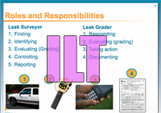

After weeks of developing this course simulator, I was also tasked with delivering the training to the bank's Branch Excellence Support Team (tech-support) for all branches. This group provides a critical function for the bank and are a diverse group ranging in: technical skill levels, ages, and cultural backgrounds. The challenges training this provided valuable feedback to improve the course for future learners.
- Appian System sandbox environment created in Storyline
- Guided training developed for B.E.S.T., branch managers, and tellers who process loans using this system.
- Facilitated this course to over 50 learners with a 95% success rate
2015 Career and Performance Roadmap
The Career and Performance Roadmap sandbox environment was built using Adobe Captivate so employees could practice using the system to set competencies and goals. The system was used to gauge, in a yearly review, contributions and goals indicating growth in employee's current role within the company.
The screen shot sample for Creating New Report demos the information for the system's Data Pane Window divided into columns, so the systems interface features can be individually pointed out and users can practice filtering:
- Text Fields
- Numeric Fields
- Date/ Time
- Other Fields
The Creating a New Report lays the steps for the learner to follow and explains using some desinger features within the system at a granular level.
